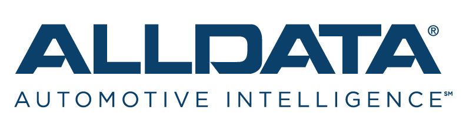

Productos Destacados

Microsoft Office 365
La suite de productividad definitiva para tus necesidades empresariales.
Precio: $29.99/año
ComprarCummins
Este programa esta diseñado para talleres, técnicos, flotas y usuarios que operan vehículos y equipos equipados con motores Cummins.
Descripción
- Es un software de diagnóstico para motores diésel de Cummins que permite a los técnicos realizar análisis de fallos, ajustes y calibraciones en los motores.
- Los usuarios pueden acceder a datos en tiempo real, realizar pruebas de diagnóstico, actualizar software de control de motores (ECM), ajustar configuraciones y realizar informes detallados sobre el estado del motor.
- Se utiliza para asegurar que los motores funcionen de manera eficiente y conforme a los estándares de emisiones.
- A través de este portal, los propietarios y técnicos pueden obtener información técnica detallada sobre su motor, lo que facilita reparaciones y mantenimientos.
Precio: A consultar

ALLDATA
software ampliamente utilizado en la industria automotriz, no está específicamente orientado solo a camiones, es una plataforma de reparación y mantenimiento automotriz que provee información técnica detallada para vehículos, incluidos camiones y flotas.
Descripción
- Manuales de reparación y mantenimiento: Proporciona manuales detallados de reparación para miles de vehículos, incluidos camiones ligeros y medianos, lo que facilita el diagnóstico y la reparación de problemas mecánicos y eléctricos.
- Esquemas eléctricos y diagramas: ALLDATA ofrece diagramas y esquemas eléctricos detallados, que son esenciales para realizar reparaciones complejas en sistemas electrónicos y de cableado.
- Boletines de servicio técnico (TSB): La plataforma incluye boletines de servicio técnico emitidos por fabricantes, que son cruciales para solucionar problemas comunes en ciertos modelos de vehículos.
- Códigos de diagnóstico OBD-II: Ayuda a los mecánicos y técnicos a interpretar los códigos de diagnóstico de fallos que emiten los sistemas de los vehículos, facilitando la localización de problemas en motores y otros componentes.
- Información específica del fabricante: ALLDATA incluye instrucciones y detalles específicos proporcionados directamente por los fabricantes, lo que garantiza que las reparaciones y mantenimientos se realicen de acuerdo con las especificaciones originales del vehículo.
Precio: $249.99
Comprar